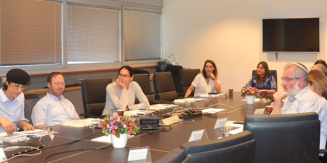

תאוריות בעלי העניין פותחו במטרה לתת מענה לארגונים עסקיים ולאפשר להם לקדם הישגים, להוביל שינויים ולעמוד בתחרות העזה בשוק החופשי. הבוגרים עובדים עם ממשקים פנים-ארגוניים וחוץ-ארגוניים רבים מאוד, ולכן חשוב שיהיו בעלי יכולת אפקטיבית לנהל בעלי עניין ושידעו לזהות את הגורמים "הבולמים" את תהליך השינוי הארגוני שהם מובילים ואת הגורמים "המסייעים" לקידומו ולהצלחתו.
את המפגש פתחה מיכל כהן, מנכ"לית קרן רש"י ולשעבר מנכ"לית משרד החינוך. היא שיתפה את הבוגרים בניסיונה בניהול בעלי עניין מזווית אישית ומקצועית. לדבריה, העידן הטכנולוגי שבו "כולם נגישים לכולם" מתאפיין בניהול של מורכבות עקב שבירת ההיררכיות וטשטוש הגבולות. הובלת תהליכים בארגון מחייבת בניית קשרי עבודה עם שותפים לדרך, רתימת בעלי עניין במרחב המקצועי וכן הגדרת גבולות ברורים. מנכ"ל , לדברי כהן, צריך לדעת להסתייע במומחים, לרתום בעלי עניין, לבנות אמון ולבנות שיתופי פעולה לשם השגת יעדי הארגון.
שרונה בר-נס, חברת צוות בכירה ביחידת בוגרי מנדל, הציגה מודלים שונים לניהול בעלי עניין בארגונים מבוססי חזון, החל בהגדרת הייעוד, הערכים המטרות, וכלה במיפוי בעלי העניין ותכנון אסטרטגיית הפעולה עם כל אחד מהם. בר-נס הציגה את ההיבט התיאורטי והדגימה כיצד הוא בא לידי ביטוי בשדה החינוכי והחברתי.
בסדנה נעשתה עבודה אישית לשם זיהוי בעלי העניין בזירה המקצועית של כל אחד מהבוגרים, ואחר כך התכנסו הבוגרים בקבוצות קטנות ללמידת עמיתים ולדיון בדרכים להפחתת התנגדויות ולגיוס תומכים ושותפים לדרך.

{kind=link}